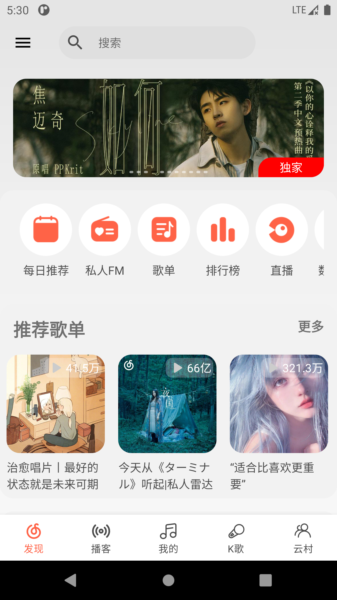

分析结构，部署代码
发现页的设计不难发现是一个Recyclver实现的布局，不一样的地方就是每个Item都不相同，包含Banner、List、Title+Content布局组合而成，实现就通过ListAdapter的override fun getItemViewType(position: Int): Int来定义不同的Item Layout
1
2
3
4
5
6
7
8
9
| override fun getItemViewType(position: Int): Int {
val discover = getItem(position)
return try {
CodeType.valueOf(discover.blockCode).ordinal
} catch (e: Exception) {
Timber.e("unknown block code: ${discover.blockCode}")
CodeType.HOMEPAGE_UNKNOWN.ordinal
}
}
|
拆分完毕，初步分类8种不同的Item，当然如果还有没统计到的情况可以继续添加：
1
2
3
4
5
6
7
8
9
10
11
12
13
14
15
16
17
18
19
20
21
22
23
24
| override fun onCreateViewHolder(parent: ViewGroup, viewType: Int): RecyclerView.ViewHolder {
return when (CodeType.values()[viewType]) {
CodeType.HOMEPAGE_BANNER ->
BannerViewHolder(inflate(parent, R.layout.discover_adapter_vh_banner))
CodeType.HOMEPAGE_DAILY_BALL -> DailyRecommendViewHolder(inflate(parent,
R.layout.discover_adapter_vh_daily_recommend))
CodeType.HOMEPAGE_BLOCK_PLAYLIST_RCMD,
CodeType.HOMEPAGE_BLOCK_MGC_PLAYLIST,
CodeType.HOMEPAGE_BLOCK_OFFICIAL_PLAYLIST,
CodeType.HOMEPAGE_YUNBEI_NEW_SONG,
CodeType.HOMEPAGE_VOICELIST_RCMD,
CodeType.HOMEPAGE_BLOCK_VIDEO_PLAYLIST,
-> PlaylistViewHolder(inflate(parent), activity)
CodeType.HOMEPAGE_MUSIC_MLOG -> MusicMLogViewHolder(inflate(parent))
CodeType.HOMEPAGE_BLOCK_STYLE_RCMD -> StyleRecommendViewHolder(inflate(parent,
R.layout.discover_adapter_vh_style_recommend), click)
CodeType.HOMEPAGE_MUSIC_CALENDAR -> MusicCalendarViewHolder(inflate(parent))
CodeType.HOMEPAGE_PODCAST24 -> Podcast24ViewHolder(inflate(parent = parent))
CodeType.HOMEPAGE_BLOCK_NEW_ALBUM_NEW_SONG -> NewAlbumSongViewHolder(inflate(parent,
R.layout.discover_adapter_vh_new_album_song), click)
else -> DiscoverEmptyViewHolder(inflate(parent, R.layout.discover_adapter_vh_empty))
}
}
|
比较杂的一个布局，添加的代码也是比较多的，耐心加完：
1
2
3
4
5
6
7
8
9
10
11
12
13
14
15
16
17
18
19
20
21
22
23
24
| .
├── adapter
│ ├── BannerViewHolder.kt
│ ├── child
│ │ ├── ChildBannerAdapter.kt
│ │ ├── ChildDailyRecommendAdapter.kt
│ │ ├── ChildMusicCalendarAdapter.kt
│ │ ├── ChildMusicMLogAdapter.kt
│ │ ├── ChildPlaylistAdapter.kt
│ │ ├── ChildPodcast24Adapter.kt
│ │ ├── ChildStyleRecommendAdapter.kt
│ ├── CodeType.kt
│ ├── DailyRecommendViewHolder.kt
│ ├── DiscoverAdapter.kt
│ ├── DiscoverEmptyViewHolder.kt
│ ├── DiscoverRankViewHolder.kt
│ ├── MusicCalendarViewHolder.kt
│ ├── MusicMLogViewHolder.kt
│ ├── NewAlbumSongViewHolder.kt
│ ├── PlaylistViewHolder.kt
│ ├── Podcast24ViewHolder.kt
│ └── StyleRecommendViewHolder.kt
├── DiscoverFragment.kt
└── DiscoverViewModel.kt
|
呈现效果
这页展示就是需要细心的分好每一页的功能就不会有什么问题，效果如下：


遇到的坑
起初时我还不知道有/homepage/block/page接口，好家伙让我一个一个接口加，最终因加载的项比较多，加载速度也不理想。。。我还以为这个App要跪了，第一项功能就这么慢明显不是我想的啊，压垮我最后一根稻草就是获取排名的接口，不能一次性获取，需要加个for循环来组装数据！！
原先写的获取数据接口
1
2
3
4
5
6
7
8
9
10
11
12
13
14
15
16
17
18
19
20
21
22
23
24
25
26
27
28
29
30
| val data: Flow<List<Discover>> = flow {
val list = mutableListOf<Discover>()
val banner = datasource.getBanner()
list.add(Discover.Banner(data = banner.data))
val dailyRecommend = DailyRecommendBean.loadData()
list.add(Discover.DailyRecommend(data = dailyRecommend))
val recommendResource = datasource.getRecommend()
recommendResource.data?.let {
list.add(Discover.RecommendResource(data = it.recommend))
}
val ranks = datasource.topList()
if (ranks is Resource.Failure) {
Timber.d("failed ranks data: ${ranks.message}")
}
ranks.data?.list?.forEachIndexed { index, topList ->
if (index < 2) {
val itemList = datasource.playlistDetail(topList.id)
if (itemList is Resource.Success) topList.playlist = itemList.data
}
}
list.add(Discover.Ranks(data = ranks.data?.list))
emit(list)
}.flowOn((Dispatchers.IO))
|
感动的是发现了/homepage/block/page接口才有了接下来的完善，用新接口整个世界都安静了
注意：接口中不包含daily recommend部分，组装的数据，这里初写时也遇到坑，我以为用的本地资源文件，还去反编译了Netease App找这些文件，关键是我还找到了大部分。。。太感人（伤心）了
1
2
3
4
5
6
7
8
9
10
11
12
13
14
15
16
17
18
19
20
21
22
23
24
25
|
val pages = MutableStateFlow<List<Block>?>(null)
init {
viewModelScope.launch(Dispatchers.IO) {
val result = datasource.homepage()
val daily = datasource.daily()
if (result is Resource.Success) {
val blocks = result.data!!.data.blocks
if (daily is Resource.Success) {
daily.data?.data?.toBlock()?.let {
blocks.add(1, it)
}
} else {
Timber.e("daily error: ${daily.message}")
}
pages.value = blocks
} else {
Timber.e("home page error: ${result.message}")
}
}
}
|
参考
https://github.com/youth5201314/banner